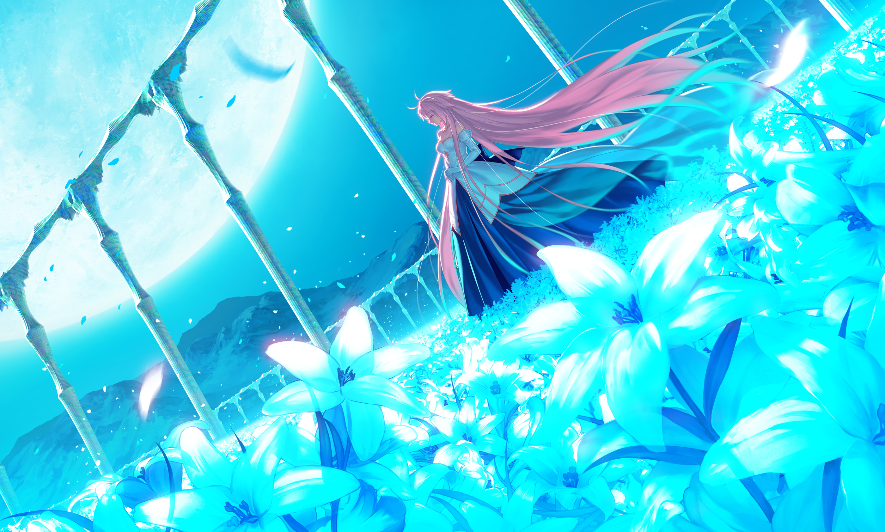

Tech Stack
C++23
ElysiaEngine
SDL3
Box2D
Lua
CMake
C++23 / ElysiaEngine / 2D Flight Game
A desktop recreation of Fly2theMoon built on my own ElysiaEngine. Guide the character toward the moon with controlled thrust, navigating gravity, inertia, and obstacles while collecting stars and gems. The project brings flight physics, level mechanisms, Lua-driven story sequences, and a complete desktop interface together in C++23.
Gameplay videos will be added here. You can explore the architecture and source excerpts below in the meantime.
Keyboard, mouse, and gamepad inputs feed the same flight model. Pointer direction and distance determine thrust, while analog stick and trigger input retain gradual power after a 20% dead zone. Gravity, inertia, collision, power limits, and damping shape the route through each level.
The project imports terrain and object data for 60 levels across four chapters. Gameplay entities implement moving platforms, rotating mechanisms, spikes, wind fields, portals, lasers, launchers, and bombs. Content coverage and individual level validation are still in progress.
Lua coroutines suspend for dialogue, delays, and camera travel, then resume through the game loop or player input. Host callbacks connect scripts to FlightScene. The presentation layer handles tutorials, character transitions, collection effects, dialogue, audio, and camera movement.
Main menu, level selection, achievements, settings, credits, HUD, pause, and result panels form the desktop flow. Completed runs update stars, scores, best times, achievements, and newly unlocked levels through progress::Store and the engine save service. Death records and story flags are also retained.
GameModule registers scenes with ElysiaEngine; FlightScene coordinates content, gameplay entities, story, and frontend components. CMake builds the C++23 project with SDL3, Box2D, and Lua. The optional F2 overlay exposes debug drawing, performance statistics, time controls, and camera controls; tests, input replays, and asset checks support development.
GameModule registers the menu, flight, selection, credits, achievements, and settings scenes with the engine SceneManager.
Analog controls rescale their dead zone; pointer input maps angle and distance to thrust. Force is limited by maximum power, with separate velocity damping.
Script commands yield for dialogue and timed waits. Runtime resumes the coroutine after time advances or the player continues a line.
The progress store compares dependency-based unlocks before and after a clear, retains best records, evaluates achievements, and saves progress.
This is an unofficial recreation for game development learning and research into the original mechanics. Project code is MIT licensed; the original name, artwork, audio, and story belong to their respective rights holders and are not covered by that license. Implementation and level validation are ongoing; importing all 60 levels does not establish a complete playthrough of every level.
